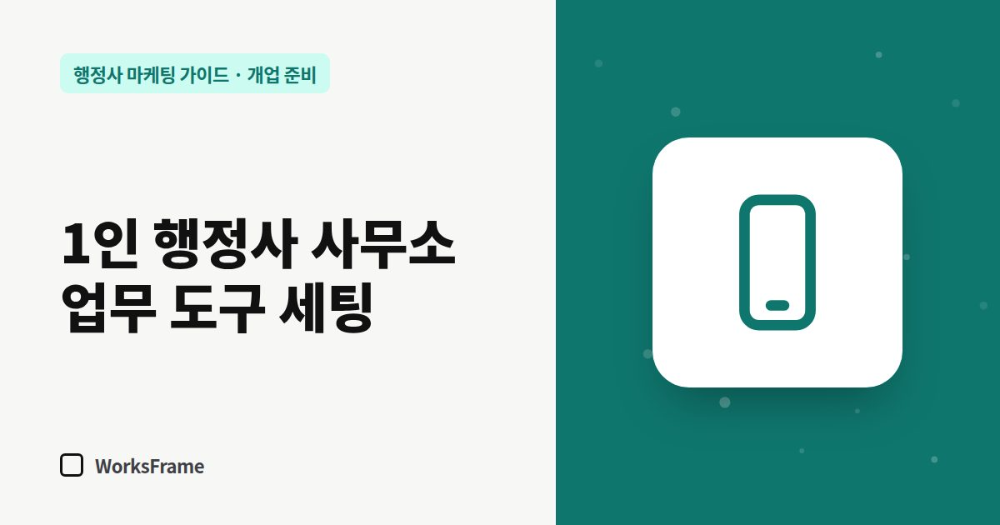

개업 준비
1인 행정사 사무소 업무 도구 세팅 — 전화·카톡·일정·문서
한 줄 답
업무용 번호와 부재중 자동 문자, 카카오톡 채널, 기한 알림, 사건별 문서 폴더, 위임장·계약서 양식. 이 다섯 가지를 첫 주에 갖추면 혼자서도 문의를 놓치지 않습니다.

혼자 운영하는 사무소는 상담 중이거나 관공서에 가 있는 동안 걸려 오는 전화를 받기 어렵습니다. 문의를 놓치지 않고, 서류를 안전하게 다루는 도구를 개업 첫 주에 갖춰 두세요.
1. 전화 — 놓친 전화를 되살리기
- 업무용 번호를 따로 — 개인 번호와 섞이면 퇴근 후에도 업무 전화가 계속 옵니다.
- 부재중 자동 문자 — “상담 중입니다. ○시 이후 연락드리겠습니다. 급하시면 카톡: (링크)”
- 통화 메모 습관 — 이름, 연락처, 업무, 기한, 다음 할 일 다섯 칸만 적어도 충분합니다. 첫 통화에서 확인할 것은 전화 응대 7가지에 정리했습니다.
2. 카카오톡 — 상담 창구 분리
개인 카톡으로 고객과 대화하면 사진·서류가 사적인 대화와 섞입니다. 카카오톡 채널을 만들어 상담 창구를 분리하세요. 채널 개설 방법은 카카오톡 채널 만들기에 있습니다.
3. 일정 — 기한이 곧 신뢰
행정 업무는 기한이 중요합니다. 체류기간 만료일, 처분 통지일, 보완 요청 기한을 일정 앱에 넣고 알림을 두 번(1주 전, 2일 전) 걸어 두세요.
4. 문서 — 보관과 폐기 규칙
| 구분 | 규칙 예시 |
|---|---|
| 받은 서류 | 사건별 폴더, 파일명 날짜_고객_서류명 |
| 저장 위치 | 클라우드 1곳 + 백업 1곳 |
| 공유 | 링크 공유 대신 필요한 파일만, 기간 제한 |
| 폐기 | 보관 기간이 지난 서류는 파쇄 또는 완전 삭제 |
여권번호·외국인등록번호 같은 고유식별정보나 가족관계 서류는 특히 조심해서 다뤄야 합니다. 개인 메신저나 개인 메일함에 쌓아 두지 마세요.
5. 계약·위임 — 전자서명
비대면 상담이 많다면 위임장과 계약서를 전자서명으로 받을 수 있게 준비하세요. 원본 서명이 필요한 서류인지는 업무별로 확인해야 합니다.
첫 주 세팅 체크리스트
- 업무용 번호와 부재중 자동 문자
- 카카오톡 채널 개설
- 일정 앱에 기한 알림 규칙
- 사건별 폴더 구조와 백업
- 위임장·계약서 양식 (종이·전자)
자주 묻는 질문
휴대폰 번호를 대표 번호로 써도 되나요?
됩니다. 다만 플레이스·홈페이지에 공개되니 업무용 번호를 따로 두는 편이 관리하기 편합니다.
상담 기록은 어디에 남기는 게 좋을까요?
한 곳에 모으는 것이 가장 중요합니다. 스프레드시트 한 장이라도 사건별로 한 줄씩 쌓으면 나중에 주력 업무를 정하는 자료가 됩니다.